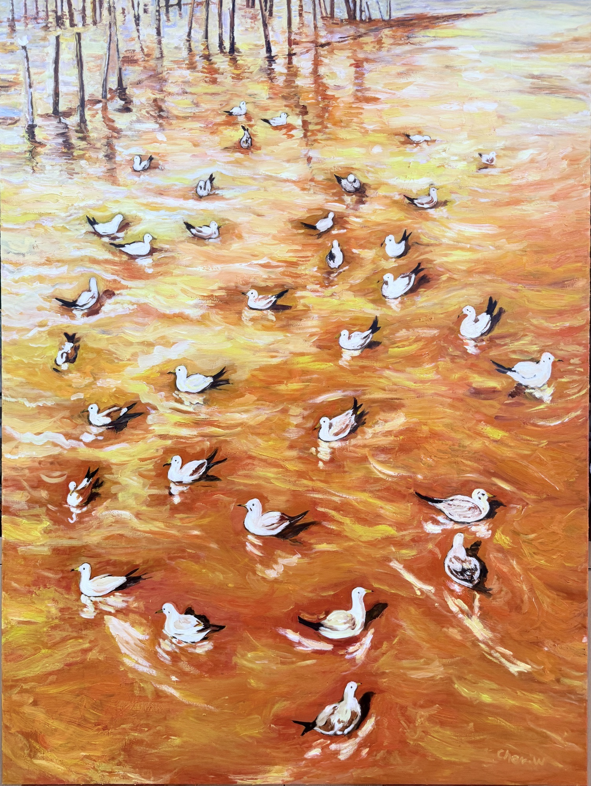

Gathering over the Golden Bay
金湾翔集

- Artwork ID / 作品编号
- KW-O-000025
- Year / 年份
- 2026
- Medium / 媒介
- Oil on canvas / 布面油画
- Dimensions / 尺寸
- 150 × 120 cm (H × W / 高 × 宽)
About the work / 作品介绍
Gathering over the Golden Bay was completed in 2026 and is inspired by the ecological landscape of Shenzhen Bay. Bathed in the glow of the setting sun, flocks of seagulls drift across shimmering golden water, creating a vibrant image of openness, vitality, and natural harmony.The title, “Gathering,” symbolizes the openness and shared development of the Guangdong–Hong Kong–Macao Greater Bay Area. The converging birds evoke cultural exchange and mutual prosperity, while the flowing golden light expresses the ecological beauty of harmonious coexistence between people and nature and the forward-looking spirit of the new era.
《金湾翔集》创作于2026年，以深圳湾生态景观为原型，描绘夕阳映照下群鸥翔集、碧波流金的动人景象。海鸥作为滨海生态的重要象征，在金色水域中自由栖息、相互呼应，构成开放包容、生机勃发的生命图景。作品借“翔集”之意，寓意粤港澳大湾区开放共享、交流互鉴的发展格局，象征不同文化与文明在湾区汇聚共荣。画面通过流动的暖色光影与灵动的鸥群形象，展现新时代湾区人与自然和谐共生的生态之美，以及面向未来、携手同行的时代精神。